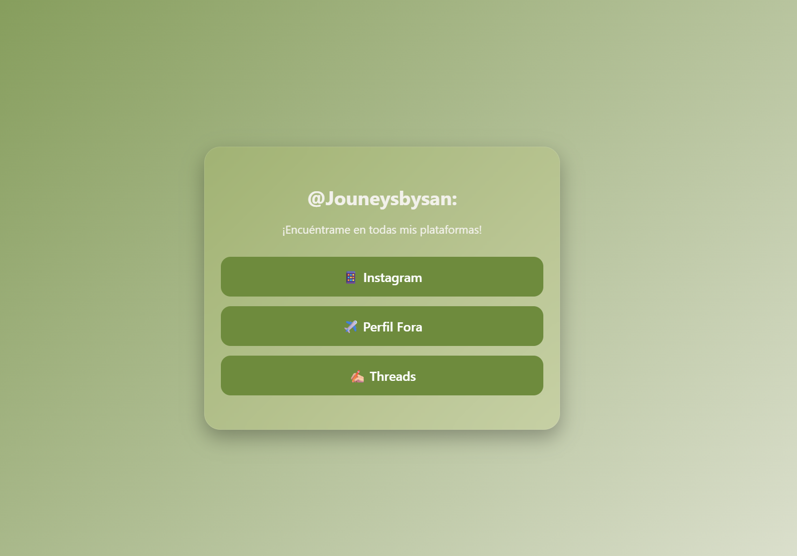
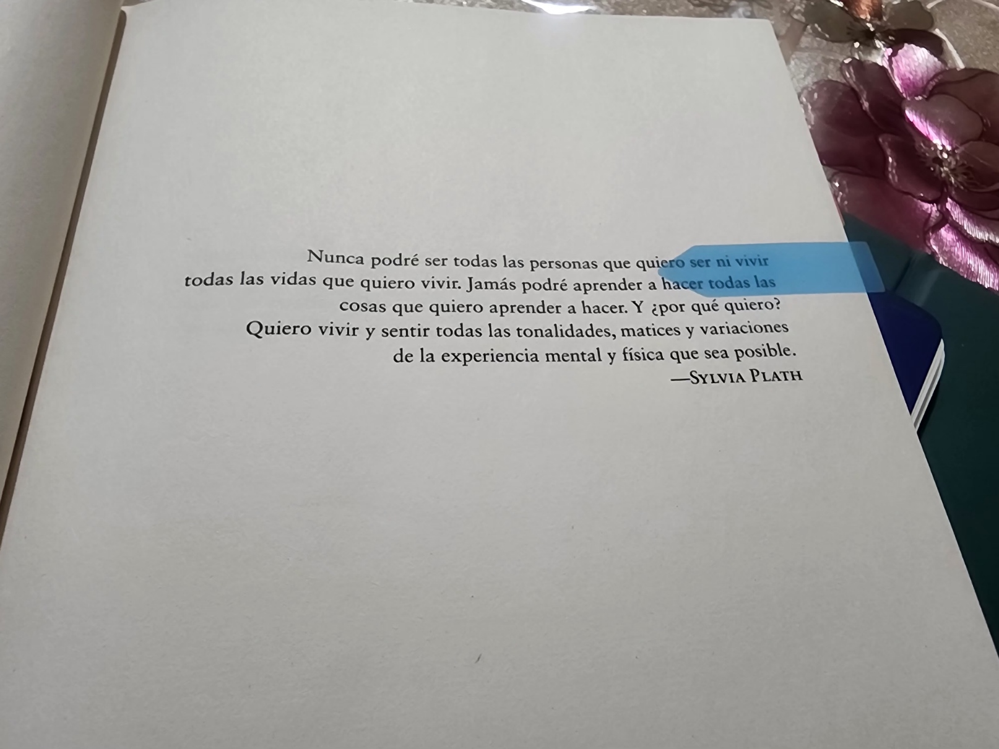
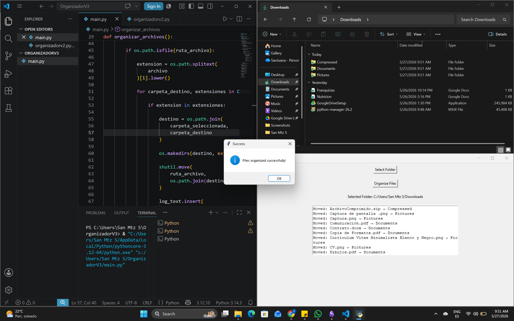
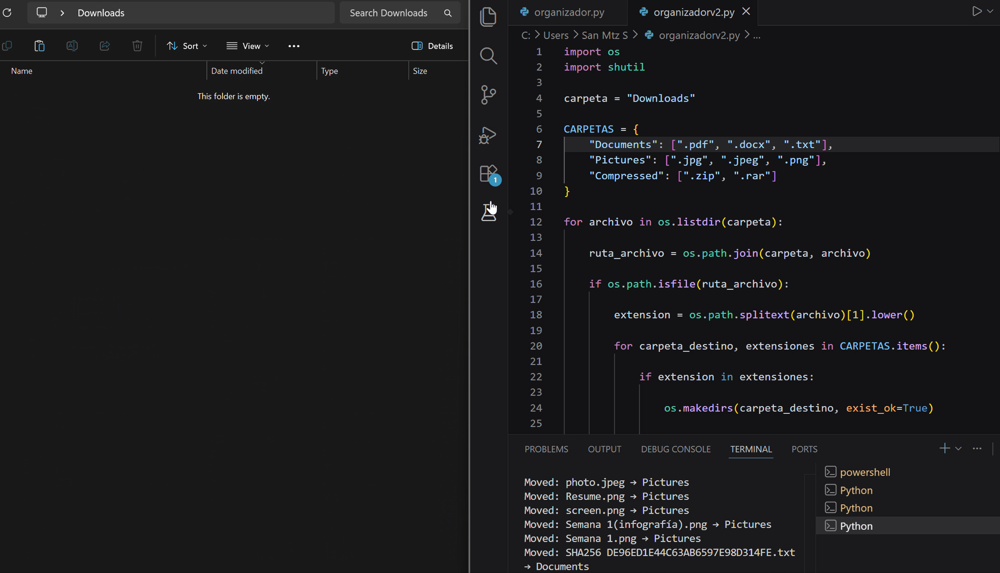
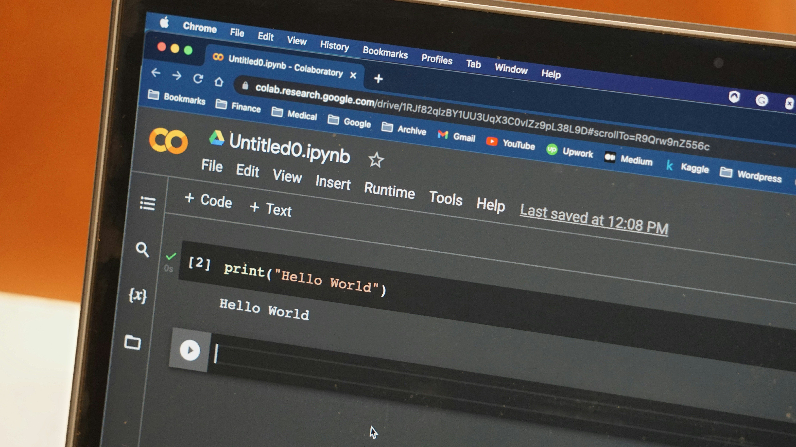

Imagen tomada de Unsplash / Jéan Béller
Día 45 J.A.R.V.I.S, Iron Man y el futuro que imaginábamos
2026-09-15
Hace 18 años se estrenó *Iron Man* por primera vez en cines y, aunque en ese momento no podía saberlo, aquella película marcó un antes y un después en mis...
Imagen tomada de Unsplash / Jason Richard
Día 44 Antes de la IA, estaba el patito de goma
2026-09-07
Recuerdo uno de mis breakdowns durante mi carrera en Sistemas. Estábamos realizando un proyecto bastante interesante para la universidad, con la esperanza de terminar el ciclo sin demasiados problemas después...
Imagen tomada de Unsplash / Markus Spiske
Día 43 SQL Injection
2026-08-27
Las bases de datos son herramientas fundamentales en la vida real. Gran parte de la información que almacenan pertenece a clientes, usuarios, empresas o proveedores de servicios, por lo que...

Imagen tomada de Unsplash / Caspar Camille Rubin
Día 42 SQL y Python
2026-08-24
# Cuando los caminos comienzan a conectarse Cada ocasión en que aprendíamos un lenguaje nuevo me sentía un poco como Thanos al conseguir una gema nueva. Cada lenguaje parecía abrir...
Imagen tomada de Unsplash / Jozsef Hocza
Día 41 Indices en SQL
2026-08-21
## Los caminos que elegimos para encontrar algo Hace unos días estuve corriendo mientras admiraba el paisaje en cada momento. Correr se ha convertido en una de mis actividades favoritas,...

Imagen tomada de Unsplash / Camara Negra
Día 40 Café, pan y tablas que se encuentran
2026-08-17
Cuando los días son tan frescos que el mismo aire se siente agradable en el rostro, no puedo dejar de pensar en lo delicioso que huele el café. Y casi...

Imagen tomada de Unsplash / Gülfer ERGİN
Día 39 Funciones en SQL
2026-08-14
### Cuando buscar ya no es suficiente: funciones en SQL Conocer las herramientas que nos proporciona SQL para realizar consultas nos ayuda a mejorar nuestras búsquedas. Comandos como `WHERE`, `LIKE`,...
Imagen tomada de Unsplash / Jonathan Francisca
Día 36 Bases de datos
2026-08-11
## La bibliotecaria que me enseñó a entender el CRUD Cuando leí *La biblioteca de la medianoche*, hubo una idea que no dejaba de dar vueltas en mi cabeza. La...
Imagen tomada de Unsplash / Andrew Moca
Día 24 Conjuntos
2026-08-11
En programación, muchas veces necesitamos organizar información. Pero no siempre queremos guardar todo tal como llega. A veces necesitamos quedarnos únicamente con elementos únicos, sin repeticiones. Ahí es donde entran...

Imagen tomada de Unsplash / Mohammad Rahmani
Día 38 Herramientas de SQL
2026-08-11
## Aprendiendo a buscar entre los datos con SQL Ahora que conocemos un poco más sobre las tablas relacionales y lo que podemos hacer mediante comandos, como las operaciones que...

Imagen tomada como evidencia del programa realizado
Generador Codigo QR Version 4
2026-08-06
### De un QR bonito a una herramienta real (Versión 4) Mi código QR ya era un éxito… o al menos, para el nivel estético que estaba buscando. Tenía los...
Imagen tomada de Unsplash / Esther Tuttle
Cuando el deseo deja de ser amor
2026-08-03
Hace aproximadamente un mes vi una película que me dejó pensando durante días. No suelo ver películas de este género, pero el ruido que había alrededor de ella en redes...
Imagen tomada como evidencia del programa realizado
Generador Codigo QR Version 2 y 3
2026-07-31
## Personalizando mi generador de códigos QR (Versiones 2 y 3) Después de generar la primera versión de mi código QR, me di cuenta de que cumplía perfectamente su función....

Imagen tomada de Unsplash / Mikhail Pushkarev
Día 37 Tablas en SQL
2026-07-27
## Lo que Blockbuster me recordó sobre las tablas en SQL Hace unos días, mientras cuidaba a mis sobrinos y limpiaba la casa, uno de ellos encontró una vieja película...
Imagen tomada como evidencia del programa realizado
Generador Codigo QR Version 1
2026-07-20
Hace unos meses decidí mandar a imprimir mis primeras tarjetas como asesora de viajes. Mientras veía distintos diseños, me di cuenta de que casi todas tenían un código QR. Al...
Imagen tomada de Unsplash / Michał Bożek
Día 35 SQL
2026-07-07
## SQL, rompecabezas y juegos de encaje Durante mi infancia tenía una ligera obsesión con los rompecabezas. Me fascinaba la idea de tomar cientos de piezas dispersas y, poco a...

Imagen tomada de Unsplash / Artur Aldyrkhanov
Día 34 Bye Python, Salve SQL
2026-07-01
## Terminando Python y regresando a SQL Hace algunos meses comencé mi camino con Python. Al principio, la transición desde C me pareció extraña. Durante mi formación académica trabajé principalmente...
Imagen tomada de Unsplash / Guillaume de Germain
Día 33 Mary Poppins
2026-06-26
Cuando era niña y vi por primera vez *Mary Poppins*, recuerdo haberme fascinado con una idea en particular. Su bolso. De él podía sacar una lámpara, una planta o prácticamente...
Imagen tomada de Unsplash / Ananthan Loggi
Mix de idiomas
2026-06-23
Hace algunos meses comencé a aprender un nuevo idioma como fondo. Como esa música que suena mientras haces otra cosa, así empezó el italiano para mí. Mi prioridad seguía siendo...
Imagen tomada de Unsplash / Christina @ wocintechchat.com M
Día 32 Entradas y Salidas
2026-06-16
Actualmente interactuamos con la tecnología de formas que hace algunos años parecían imposibles. Hablamos con asistentes virtuales, realizamos búsquedas en segundos y utilizamos herramientas de inteligencia artificial para obtener información...
Imagen tomada de Unsplash / Unseen Studio
Aprender sin rigudez
2026-06-11
## Cómo sigo aprendiendo tantas cosas sin volverme loca Hace poco comencé una nueva etapa que me emociona bastante. Inicié mi formación para certificarme como asesora de viajes, algo que...
Imagen tomada de Unsplash / Vitaly Gariev
Día 31 Excepciones Personalizadas
2026-06-05
## Excepciones personalizadas Cada persona es diferente. Aunque podamos compartir gustos, experiencias o formas de pensar, siempre existen pequeños detalles que nos distinguen unos de otros. La tecnología ha aprendido...

Imagen tomada del libro La Biblioteca de Medianoche de Matt Haig
La Biblioteca de Medianoche
2026-06-01
## Aunque el cielo esté gris Cuando era niña y miraba las estrellas, me preguntaba qué se sentiría subir hasta allá y poder verlas de cerca. Pasé gran parte de...

Imagen tomada como evidencia del programa realizado
Día 30 Organizador Version 3.0
2026-05-27
## Construyendo un organizador de archivos con interfaz en Python: de una idea simple a una herramienta funcional A veces una necesidad sencilla termina convirtiéndose en un proyecto mucho más...
Imagen tomada de Unsplash / Ling App
Ingles y Python
2026-05-25
**El inglés y Python tienen una complejidad sorprendentemente similar.** Cuando estudié C hace un tiempo, recuerdo sentir que estaba aprendiendo algo tan distinto que incluso me hacía pensar en otro...
Imagen tomada de Unsplash / Erik Mclean
Día 29 Excepciones
2026-05-21
Cuando nos equivocamos es fácil culparnos o frustrarnos con nosotros mismos. Y honestamente, equivocarse es algo tan humano que a veces pareciera que nacemos sabiendo hacerlo. Creo que gran parte...
Imagen tomada de Unsplash / Rami Al-zayat
Día 28 Abstracción
2026-05-19
Actualmente las redes sociales nos mantienen conectados con personas de todo el mundo. Probablemente son de los sitios que más utilizamos en nuestra vida diaria. Compartimos memes, reaccionamos a publicaciones,...
Imagen tomada de Unsplash / Robynne O
Aprender te cambia
2026-05-18
Hace unos meses estaba procrastinando avanzar en programación. No porque no supiera qué hacer o cómo hacerlo. Era porque había demasiada información allá afuera. Todos parecían decirme: - qué debía...
Imagen tomada de Unsplash / Phil Mosley
Día 26 POO
2026-05-15
## **Programación Orientada a Objetos** Hace unos días, mientras esperaba en el aeropuerto para cruzar medio país hasta Ciudad de México, noté algo interesante. A todos los pasajeros se nos...

Imagen tomada como evidencia del programa realizado
Día 25 Organizador Version 2.0
2026-05-13
## Mejorando mi organizador automático de archivos con Python (Versión 2) Después de construir la primera versión de mi organizador automático de archivos, decidí mejorar el proyecto para hacerlo más...
Imagen tomada de Unsplash / Brett Jordan
Día 23 Diccionarios
2026-05-08
Hoy en día casi todos tenemos un teléfono. Y aunque lo usamos para muchas cosas, una de sus funciones más básicas sigue siendo la comunicación. Para lograrla, normalmente buscamos un...
Imagen tomada de Unsplash / Amanz
Día 22 Tuplas
2026-05-07
Cuando estudiamos listas, es inevitable recordar los arrays que vimos anteriormente en C. Ambas estructuras nos permiten organizar varios datos en un mismo lugar. Sin embargo, al seguir avanzando en...

Imagen tomada de Unsplash / Glenn Carstens-Peters
Día 21 Listas
2026-05-05
Hace apenas una semana estábamos recorriendo este camino en C. Ahora, en Python, muchas cosas comienzan a sentirse familiares. Y eso es interesante, porque aunque cambie el lenguaje, varios conceptos...

Imagen tomada como evidencia del programa realizado
Día 20 Organizador de Archivos
2026-05-04
## Organizador automático de archivos con Python Hoy construí un pequeño proyecto en Python: un organizador automático de archivos. La idea surgió de un problema cotidiano: las carpetas como “Descargas”...

Imagen tomada de Unsplash / Nik
Día 19 Bucles
2026-05-01
## Las acciones que repetimos En el día a día solemos repetir muchas acciones. Lavamos nuestros dientes, nuestra cara, aplicamos cremas, bloqueador solar… incluso seguimos pequeñas rutinas antes de salir...
Imagen tomada de Unsplash / Artturi Jalli
Día 18 Condicionales
2026-04-30
**Estructuras de control: Condicionales** Tomar decisiones es algo que hacemos todos los días. Elegimos qué comprar, qué camino tomar o incluso qué decir en cierto momento. A veces es fácil....
Imagen tomada de Unsplash / Shahadat Rahman
Día 17 Funciones
2026-04-29
Después de trabajar con variables y operadores, llega algo que cambia bastante la forma en la que programamos: las funciones. Hasta ahora hemos estado haciendo operaciones directamente. Pero una función...
Imagen tomada de Unsplash / Annie Spratt
Día 16 Operadores
2026-04-28
Una vez que comprendemos las variables, es natural querer empezar a usarlas. Es como cuando aprendemos los números. De pronto, contar se vuelve parte de todo: las líneas en el...
Imagen tomada de Unsplash / Octavian-Dan Craciun
Día 15 Variables
2026-04-25
Las variables son una de las primeras cosas que vemos al empezar a programar, y aunque parecen simples, son la base de todo. En Python, algo que cambia desde el...

Imagen tomada de Unsplash / Zach Graves
Día 14 De C a Python
2026-04-23
*Disclaimer: Para realizar estas notas y las siguientes de este curso de Python, he añadido un curso extra como apoyo a mi aprendizaje que pueden encontrar en la plataforma de...